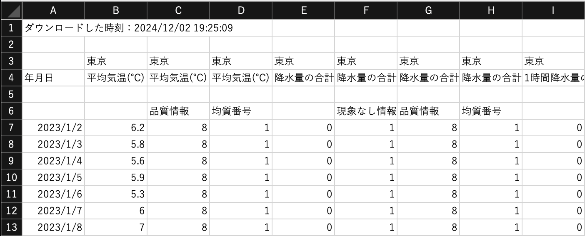
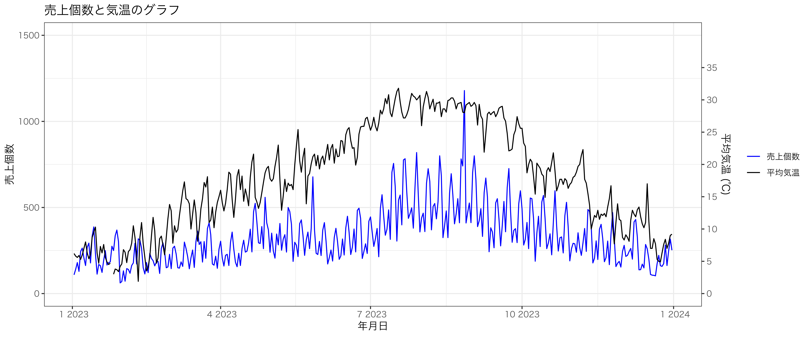
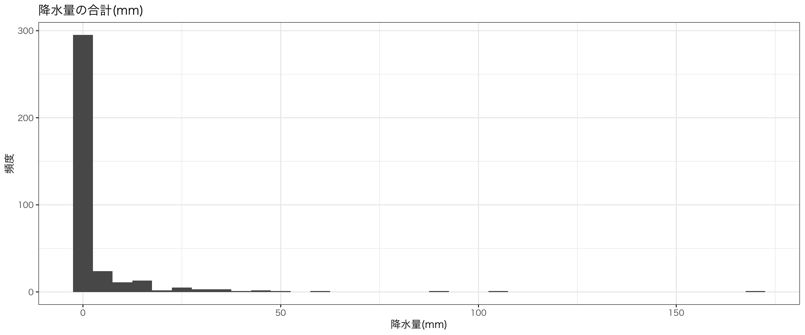
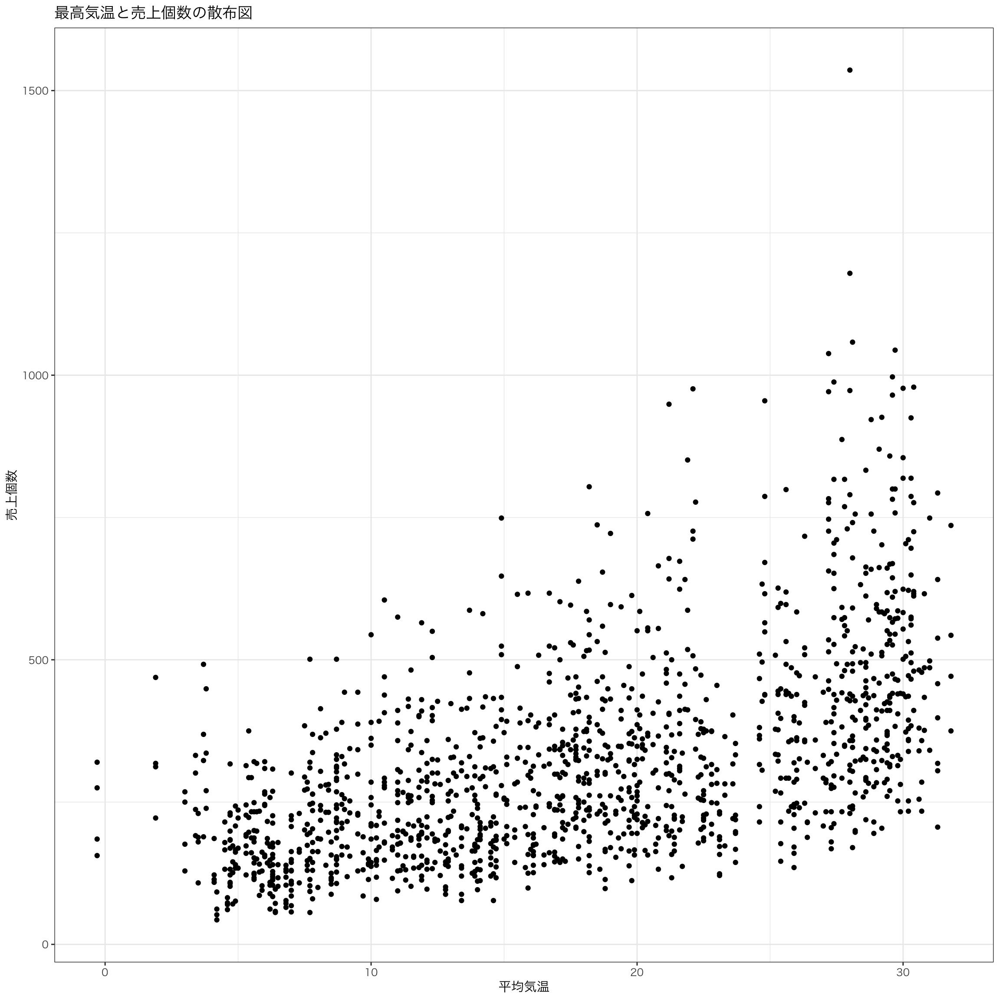

4 第4回 売上に影響を与える要因
4.1 はじめに
いつもどおり、パッケージとデータを準備します。 第3回ファイルで使うデータは、
chp4.xlsx
です。このExcelデータがdataフォルダに保存されていることを確認してください。 次に、必要なパッケージをpacman::p_load()を使って読み込みます。
4.2 天気データ
gdf1HzC2KkA2nt
気象庁のウェブサイトからテキストの通りにデータを取得し、weather.csvとしてdataフォルダに保存してください。 このファイルをMS Excelで開くと、次のようなデータが表示されます。

このデータをRで分析するための前処理を行います。
- 必要ない値が入っているので、1〜3行目を削除
- 必要な変数は
年月日、平均気温(℃)、最高気温(℃)、最低気温(℃)、天気概況(昼：06時～18時)、降水量の合計(mm)、1時間降水量の最大(mm)なので、それ以外の列を削除 - 必要ない行を削除
New names:
Rows: 366 Columns: 21
── Column specification
──────────────────────────────────────────────────────── Delimiter: "," chr
(16): 年月日, 平均気温(℃)...3, 平均気温(℃)...4, 最高気温(℃)...6,
最高気温(℃)...7, 最低気温(℃)..... dbl (5): 平均気温(℃)...2, 最高気温(℃)...5,
最低気温(℃)...8, 降水量の合計(mm)...11, 1時間降水量の最大(...
ℹ Use `spec()` to retrieve the full column specification for this data. ℹ
Specify the column types or set `show_col_types = FALSE` to quiet this message.
• `平均気温(℃)` -> `平均気温(℃)...2`
• `平均気温(℃)` -> `平均気温(℃)...3`
• `平均気温(℃)` -> `平均気温(℃)...4`
• `最高気温(℃)` -> `最高気温(℃)...5`
• `最高気温(℃)` -> `最高気温(℃)...6`
• `最高気温(℃)` -> `最高気温(℃)...7`
• `最低気温(℃)` -> `最低気温(℃)...8`
• `最低気温(℃)` -> `最低気温(℃)...9`
• `最低気温(℃)` -> `最低気温(℃)...10`
• `降水量の合計(mm)` -> `降水量の合計(mm)...11`
• `降水量の合計(mm)` -> `降水量の合計(mm)...12`
• `降水量の合計(mm)` -> `降水量の合計(mm)...13`
• `降水量の合計(mm)` -> `降水量の合計(mm)...14`
• `1時間降水量の最大(mm)` -> `1時間降水量の最大(mm)...15`
• `1時間降水量の最大(mm)` -> `1時間降水量の最大(mm)...16`
• `1時間降水量の最大(mm)` -> `1時間降水量の最大(mm)...17`
• `1時間降水量の最大(mm)` -> `1時間降水量の最大(mm)...18`
• `天気概況(昼：06時〜18時)` -> `天気概況(昼：06時〜18時)...19`
• `天気概況(昼：06時〜18時)` -> `天気概況(昼：06時〜18時)...20`
• `天気概況(昼：06時〜18時)` -> `天気概況(昼：06時〜18時)...21`これで必要な部分だけデータを取得できましたが，変数名が重複しているため，自動的に...2などの番号が付与されてしまっています。 これをrename()を使って変数名を修正します。
4.3 販売データ
テキストのデータchp4.xlsxを読み込みます。 readxl::read_excel()にオプションとしてsheet = 1を指定することで、1番目のシートを読み込みます。
4.4 データの結合
天気データと販売データを結合します。 年月日で1対1対応しているので、これをキーとして左結合するためにleft_joinを使います。
Rows: 364
Columns: 11
$ 年月日 <date> 2023-01-02, 2023-01-03, 2023-01-04, 2023-01-05,…
$ `緑茶（自社）` <dbl> 109, 141, 180, 129, 245, 264, 207, 163, 269, 293…
$ `濃い茶（自社）` <dbl> 62, 86, 125, 95, 190, 154, 149, 100, 140, 197, 1…
$ `おいしい緑茶（A社）` <dbl> 148, 234, 233, 162, 314, 309, 301, 186, 308, 375…
$ `おいしい濃茶（A社）` <dbl> 89, 127, 152, 103, 227, 246, 219, 163, 226, 223,…
$ 平均気温 <dbl> 6.2, 5.8, 5.6, 5.9, 5.3, 6.0, 7.0, 8.0, 6.3, 5.4…
$ 最高気温 <dbl> 12.1, 11.0, 11.0, 10.6, 9.9, 10.4, 12.5, 13.9, 9…
$ 最低気温 <dbl> 2.0, 0.5, 1.3, 2.6, 0.0, 3.0, 1.6, 2.4, 2.8, 1.5…
$ 降水量の合計mm <dbl> 0.0, 0.0, 0.0, 0.0, 0.0, 0.0, 0.0, 0.0, 0.0, 0.0…
$ 一時間降水量の最大mm <dbl> 0.0, 0.0, 0.0, 0.0, 0.0, 0.0, 0.0, 0.0, 0.0, 0.0…
$ `天気概況6-18h` <chr> "晴", "快晴", "晴", "快晴", "薄曇時々晴", "晴", "快晴", "快晴", …4.5 気温のグラフ
最高、最低、平均気温の折れ線グラフを描きます。
select()で年月日、最低気温、平均気温、最高気温の列を選択pivot_longer()で最低気温、平均気温、最高気温を縦に並べたワイド型に変換ggplot()でグラフを描画
という処理を行います。

気温のグラフに売上個数のグラフを追加して二軸の折れ線グラフを作成します。
# 売上データを例として利用
df_pos_weather |>
select(年月日, 個数 = `緑茶（自社）`, 平均気温) |>
ggplot(aes(x = 年月日)) +
geom_line(aes(y = 個数, color = "売上個数"), linewidth = 0.5) +
geom_line(aes(y = 平均気温 * 1500/40, color = "平均気温")) +
scale_y_continuous(
name = "売上個数",
limits = c(0, 1500), # 売上個数軸の範囲を設定
sec.axis = sec_axis(
trans = ~ . / (1500/40), # 気温軸を元のスケールに戻す変換
name = "平均気温 (℃)",
breaks = seq(-5, 35, 5) # 気温軸の目盛りを設定
)
) +
scale_color_manual(values = c("売上個数" = "blue", "平均気温" = "black")) +
labs(title = "売上個数と気温のグラフ", x = "年月日") +
theme_bw(base_family = "Hiragino Sans") +
theme(legend.title = element_blank())
4.6 降水量のグラフ
日ごとの降水量の棒グラフを作成してみます。

微妙に分かりづらいので，月ごとに集計して棒グラフを描画します。
df_pos_weather |>
mutate(月 = factor(month(年月日), unique(month(年月日)))) |>
summarise(
.by = c(月),
降水量の合計mm = sum(降水量の合計mm)
) |>
ggplot(aes(x = 月, y = 降水量の合計mm)) + geom_col() +
theme_bw(base_family = "HiraKakuPro-W3") +
labs(title = "月ごとの降水量の合計(mm)", x = "月", y = "降水量(mm)") +
theme_bw(base_family = "HiraKakuPro-W3") +
scale_fill_tableau(name = "Tableau 20")
やはり6月は降水量が多いようです。 降水量のヒストグラムを描いてみます。

降水量が非常に少ない日が圧倒的に多いこともわかります。
4.7 2変数間の関係をみる
売上個数に影響を与える要因を探るために，気温や降水量との関係を表す散布図(scatter diagram)を描いてみます。
まずは最高気温と売上個数の散布図を描いてみます。
g_item_temp <- df_pos_weather |>
select(年月日, "緑茶（自社）", "濃い茶（自社）", "おいしい緑茶（A社）","おいしい濃茶（A社）","平均気温", "最高気温") |>
pivot_longer(cols = c("緑茶（自社）", "濃い茶（自社）", "おいしい緑茶（A社）","おいしい濃茶（A社）"), names_to = "商品", values_to = "個数") |>
ggplot(aes(x = 平均気温, y = 個数)) +
geom_point() +
theme_bw(base_family = "HiraKakuPro-W3") +
labs(title = "最高気温と売上個数の散布図", x = "平均気温", y = "売上個数") +
theme_bw(base_family = "HiraKakuPro-W3") +
scale_fill_tableau(name = "Tableau 20")
g_item_temp
平均気温が上がると，売上個数も大きくなる傾向が見られます。 次に横軸に降水量をとってみます。
g_item_rain <- df_pos_weather |>
select(年月日, "緑茶（自社）", "濃い茶（自社）", "おいしい緑茶（A社）","おいしい濃茶（A社）","平均気温", "降水量の合計mm") |>
pivot_longer(cols = c("緑茶（自社）", "濃い茶（自社）", "おいしい緑茶（A社）","おいしい濃茶（A社）"), names_to = "商品", values_to = "個数") |>
ggplot(aes(x = 降水量の合計mm, y = 個数)) +
geom_point() +
theme_bw(base_family = "HiraKakuPro-W3") +
labs(title = "降水量と売上個数の散布図", x = "降水量", y = "売上個数") +
theme_bw(base_family = "HiraKakuPro-W3") +
scale_fill_tableau(name = "Tableau 20")
g_item_rain
降水量がゼロとなっている日が多いため，散布図が左に張り付いていて，何かを読み取ることは難しいです。
最高気温と緑茶の散布図を書いてみましょう。
df_pos_weather |>
select(年月日, "緑茶（自社）", "最高気温") |>
ggplot() + aes(x = 最高気温, y = `緑茶（自社）`) +
geom_point() +
# 個数が最大の点を強調
geom_point(data = df_pos_weather |> filter(`緑茶（自社）` == max(`緑茶（自社）`)), color = "red", size = 3) +
labs(title = "最高気温と緑茶の散布図", x = "最高気温", y = "緑茶（自社）") +
theme_bw(base_family = "HiraKakuPro-W3") +
scale_fill_tableau(name = "Tableau 20")
4.8 相関係数
2変数の線形関係の強さを示す相関係数(correlation coefficient)を求めます。 相関係数は-1から1の値を取り，1に近いほど正の相関が強く，-1に近いほど負の相関が強いことを表し，以下のように定義されます。
最も良く使われる相関係数がピアソンの積率相関係数です。
r = \frac{\sum_{i=1}^{n}(x_i - \bar{x})(y_i - \bar{y})}{\sqrt{\sum_{i=1}^{n}(x_i - \bar{x})^2}\sqrt{\sum_{i=1}^{n}(y_i - \bar{y})^2}} = \frac{\sigma_{xy}}{\sigma_x \sigma_y}
分子が2変数の共分散で，分母がそれぞれの標準偏差となっています。
気温と売上個数，降水量と売上個数の相関係数を求めてみます。
df_pos_weather |>
select(年月日, "緑茶（自社）", "濃い茶（自社）", "おいしい緑茶（A社）","おいしい濃茶（A社）","平均気温", "降水量の合計mm") |>
pivot_longer(cols = c("緑茶（自社）", "濃い茶（自社）", "おいしい緑茶（A社）","おいしい濃茶（A社）"), names_to = "商品", values_to = "個数") |>
summarise(
気温と個数 = cor(平均気温, 個数, use = "complete.obs"),
雨と個数 = cor(降水量の合計mm, 個数, use = "complete.obs")
) |>
gt() |>
fmt_number(columns = 1:2, decimals = 3) |>
tab_header(title = "相関係数") |>
tab_options(
heading.title.font.size = "normal",
table.font.size = "large",
table.width = pct(60)
)| 相関係数 | |
| 気温と個数 | 雨と個数 |
|---|---|
| 0.566 | 0.085 |
気温と売上個数との間には0.566と強い正の相関がありますが，降水量と売上個数との間には0.085とほぼ無相関に近い値が得られました。 これを図に書き込んだものが以下のようになります。